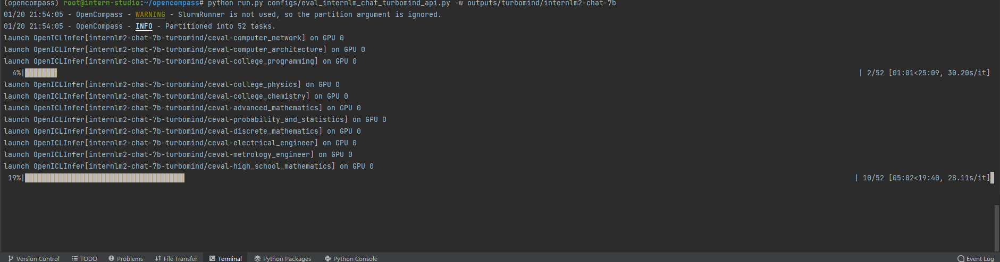

大模型实战营第六次课作业
这是大模型实战营第六次课的作业
需要A100(1/4) * 2 的硬件环境才能进行CEval的全部测试
两次测评均使用了ICL(In Context Learning)以期提升模型表现
基础作业
按照教程安装环境后，直接对InternLM2-chat-7b进行测试。
首先创建configs/eval_internlm2_chat_7b.py
1 | from mmengine.config import read_base |
之后运行
1 | python run.py configs/eval_internlm2_chat_7b.py --debug |
测试结果如下
| dataset | version | metric | mode | result |
|---|---|---|---|---|
| ceval-computer_network | db9ce2 | accuracy | gen | 63.16 |
| ceval-operating_system | 1c2571 | accuracy | gen | 68.42 |
| ceval-computer_architecture | a74dad | accuracy | gen | 57.14 |
| ceval-college_programming | 4ca32a | accuracy | gen | 56.76 |
| ceval-college_physics | 963fa8 | accuracy | gen | 52.63 |
| ceval-college_chemistry | e78857 | accuracy | gen | 33.33 |
| ceval-advanced_mathematics | ce03e2 | accuracy | gen | 31.58 |
| ceval-probability_and_statistics | 65e812 | accuracy | gen | 44.44 |
| ceval-discrete_mathematics | e894ae | accuracy | gen | 31.25 |
| ceval-electrical_engineer | ae42b9 | accuracy | gen | 40.54 |
| ceval-metrology_engineer | ee34ea | accuracy | gen | 70.83 |
| ceval-high_school_mathematics | 1dc5bf | accuracy | gen | 33.33 |
| ceval-high_school_physics | adf25f | accuracy | gen | 42.11 |
| ceval-high_school_chemistry | 2ed27f | accuracy | gen | 47.37 |
| ceval-high_school_biology | 8e2b9a | accuracy | gen | 36.84 |
| ceval-middle_school_mathematics | bee8d5 | accuracy | gen | 52.63 |
| ceval-middle_school_biology | 86817c | accuracy | gen | 80.95 |
| ceval-middle_school_physics | 8accf6 | accuracy | gen | 68.42 |
| ceval-middle_school_chemistry | 167a15 | accuracy | gen | 95.00 |
| ceval-veterinary_medicine | b4e08d | accuracy | gen | 43.48 |
| ceval-college_economics | f3f4e6 | accuracy | gen | 50.91 |
| ceval-business_administration | c1614e | accuracy | gen | 57.58 |
| ceval-marxism | cf874c | accuracy | gen | 84.21 |
| ceval-mao_zedong_thought | 51c7a4 | accuracy | gen | 75.00 |
| ceval-education_science | 591fee | accuracy | gen | 72.41 |
| ceval-teacher_qualification | 4e4ced | accuracy | gen | 79.55 |
| ceval-high_school_politics | 5c0de2 | accuracy | gen | 89.47 |
| ceval-high_school_geography | 865461 | accuracy | gen | 63.16 |
| ceval-middle_school_politics | 5be3e7 | accuracy | gen | 76.19 |
| ceval-middle_school_geography | 8a63be | accuracy | gen | 75.00 |
| ceval-modern_chinese_history | fc01af | accuracy | gen | 78.26 |
| ceval-ideological_and_moral_cultivation | a2aa4a | accuracy | gen | 89.47 |
| ceval-logic | f5b022 | accuracy | gen | 54.55 |
| ceval-law | a110a1 | accuracy | gen | 45.83 |
| ceval-chinese_language_and_literature | 0f8b68 | accuracy | gen | 56.52 |
| ceval-art_studies | 2a1300 | accuracy | gen | 66.67 |
| ceval-professional_tour_guide | 4e673e | accuracy | gen | 82.76 |
| ceval-legal_professional | ce8787 | accuracy | gen | 52.17 |
| ceval-high_school_chinese | 315705 | accuracy | gen | 63.16 |
| ceval-high_school_history | 7eb30a | accuracy | gen | 75.00 |
| ceval-middle_school_history | 48ab4a | accuracy | gen | 86.36 |
| ceval-civil_servant | 87d061 | accuracy | gen | 63.83 |
| ceval-sports_science | 70f27b | accuracy | gen | 78.95 |
| ceval-plant_protection | 8941f9 | accuracy | gen | 77.27 |
| ceval-basic_medicine | c409d6 | accuracy | gen | 63.16 |
| ceval-clinical_medicine | 49e82d | accuracy | gen | 54.55 |
| ceval-urban_and_rural_planner | 95b885 | accuracy | gen | 69.57 |
| ceval-accountant | 002837 | accuracy | gen | 48.98 |
| ceval-fire_engineer | bc23f5 | accuracy | gen | 54.84 |
| ceval-environmental_impact_assessment_engineer | c64e2d | accuracy | gen | 58.06 |
| ceval-tax_accountant | 3a5e3c | accuracy | gen | 44.90 |
| ceval-physician | 6e277d | accuracy | gen | 57.14 |
| ceval-stem | - | accuracy | gen | 52.51 |
| ceval-social-science | - | accuracy | gen | 72.35 |
| ceval-humanities | - | accuracy | gen | 68.25 |
| ceval-other | - | accuracy | gen | 61.02 |
| ceval-hard | - | accuracy | gen | 25.88 |
| ceval | - | accuracy | gen | 61.46 |
进阶作业
选择采用TurboMind API的方式完成LMDeploy部署的InternLM2-Chat-7B在CEval上的测评
按照opencompass评测LMDeploy模型的教程，首先修改配置文件configs/eval_internlm_chat_turbomind_api.py
1 | from mmengine.config import read_base |
再将InternLM2-Chat-7B 转换为TurboMind格式并以API服务形式部署（使用LMDeploy 0.2.0）：
1 | lmdeploy convert internlm2-chat-7b /root/share/model_repos/internlm2-chat-7b/ |
之后运行评测程序
1 | python run.py configs/eval_internlm_chat_turbomind_api.py -w outputs/turbomind/internlm2-chat-7b |
测试截图

测试结果如下
| dataset | version | metric | mode | result |
|---|---|---|---|---|
| ceval-computer_network | db9ce2 | accuracy | gen | 63.16 |
| ceval-operating_system | 1c2571 | accuracy | gen | 73.68 |
| ceval-computer_architecture | a74dad | accuracy | gen | 57.14 |
| ceval-college_programming | 4ca32a | accuracy | gen | 59.46 |
| ceval-college_physics | 963fa8 | accuracy | gen | 52.63 |
| ceval-college_chemistry | e78857 | accuracy | gen | 33.33 |
| ceval-advanced_mathematics | ce03e2 | accuracy | gen | 26.32 |
| ceval-probability_and_statistics | 65e812 | accuracy | gen | 38.89 |
| ceval-discrete_mathematics | e894ae | accuracy | gen | 31.25 |
| ceval-electrical_engineer | ae42b9 | accuracy | gen | 37.84 |
| ceval-metrology_engineer | ee34ea | accuracy | gen | 66.67 |
| ceval-high_school_mathematics | 1dc5bf | accuracy | gen | 38.89 |
| ceval-high_school_physics | adf25f | accuracy | gen | 42.11 |
| ceval-high_school_chemistry | 2ed27f | accuracy | gen | 47.37 |
| ceval-high_school_biology | 8e2b9a | accuracy | gen | 36.84 |
| ceval-middle_school_mathematics | bee8d5 | accuracy | gen | 47.37 |
| ceval-middle_school_biology | 86817c | accuracy | gen | 80.95 |
| ceval-middle_school_physics | 8accf6 | accuracy | gen | 68.42 |
| ceval-middle_school_chemistry | 167a15 | accuracy | gen | 95.00 |
| ceval-veterinary_medicine | b4e08d | accuracy | gen | 43.48 |
| ceval-college_economics | f3f4e6 | accuracy | gen | 49.09 |
| ceval-business_administration | c1614e | accuracy | gen | 60.61 |
| ceval-marxism | cf874c | accuracy | gen | 84.21 |
| ceval-mao_zedong_thought | 51c7a4 | accuracy | gen | 70.83 |
| ceval-education_science | 591fee | accuracy | gen | 72.41 |
| ceval-teacher_qualification | 4e4ced | accuracy | gen | 79.55 |
| ceval-high_school_politics | 5c0de2 | accuracy | gen | 89.47 |
| ceval-high_school_geography | 865461 | accuracy | gen | 63.16 |
| ceval-middle_school_politics | 5be3e7 | accuracy | gen | 76.19 |
| ceval-middle_school_geography | 8a63be | accuracy | gen | 75.00 |
| ceval-modern_chinese_history | fc01af | accuracy | gen | 69.57 |
| ceval-ideological_and_moral_cultivation | a2aa4a | accuracy | gen | 84.21 |
| ceval-logic | f5b022 | accuracy | gen | 54.55 |
| ceval-law | a110a1 | accuracy | gen | 50.00 |
| ceval-chinese_language_and_literature | 0f8b68 | accuracy | gen | 56.52 |
| ceval-art_studies | 2a1300 | accuracy | gen | 66.67 |
| ceval-professional_tour_guide | 4e673e | accuracy | gen | 82.76 |
| ceval-legal_professional | ce8787 | accuracy | gen | 52.17 |
| ceval-high_school_chinese | 315705 | accuracy | gen | 73.68 |
| ceval-high_school_history | 7eb30a | accuracy | gen | 75.00 |
| ceval-middle_school_history | 48ab4a | accuracy | gen | 86.36 |
| ceval-civil_servant | 87d061 | accuracy | gen | 63.83 |
| ceval-sports_science | 70f27b | accuracy | gen | 78.95 |
| ceval-plant_protection | 8941f9 | accuracy | gen | 77.27 |
| ceval-basic_medicine | c409d6 | accuracy | gen | 63.16 |
| ceval-clinical_medicine | 49e82d | accuracy | gen | 59.09 |
| ceval-urban_and_rural_planner | 95b885 | accuracy | gen | 67.39 |
| ceval-accountant | 002837 | accuracy | gen | 48.98 |
| ceval-fire_engineer | bc23f5 | accuracy | gen | 54.84 |
| ceval-environmental_impact_assessment_engineer | c64e2d | accuracy | gen | 58.06 |
| ceval-tax_accountant | 3a5e3c | accuracy | gen | 44.90 |
| ceval-physician | 6e277d | accuracy | gen | 57.14 |
| ceval-stem | - | naive_average | gen | 52.04 |
| ceval-social-science | - | naive_average | gen | 72.05 |
| ceval-humanities | - | naive_average | gen | 68.32 |
| ceval-other | - | naive_average | gen | 61.24 |
| ceval-hard | - | naive_average | gen | 35.88 |
| ceval | - | naive_average | gen | 61.28 |